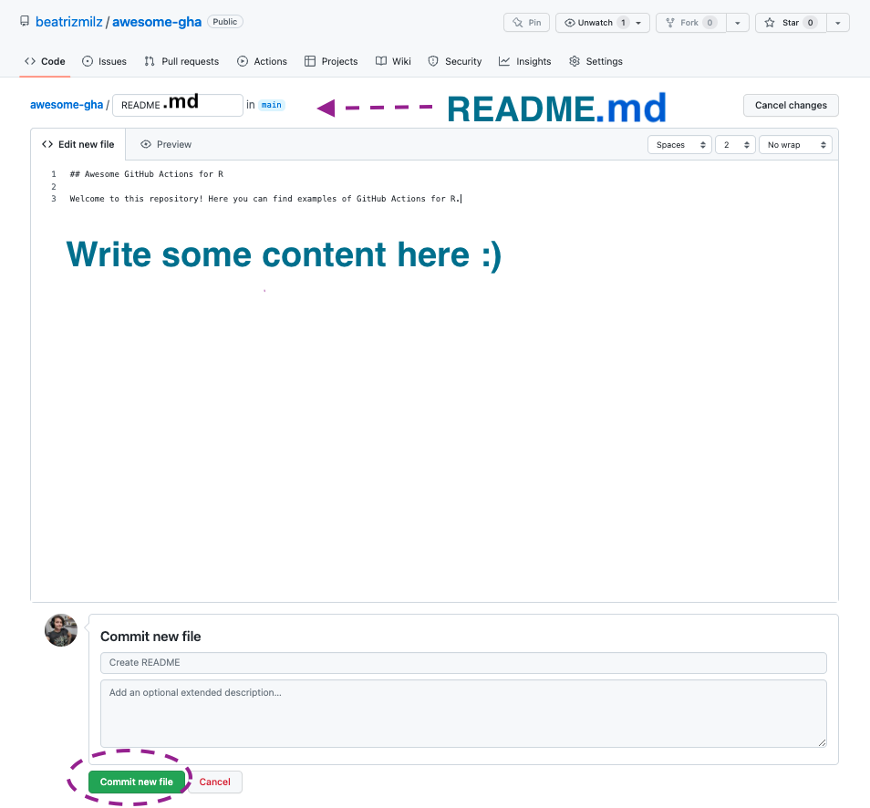

print("Hi! Welcome to a GH Actions with an R example :)")
# get information about the repositories on the Quarto organizations.
quarto_orgs <- c("quarto-dev", "quarto-ext", "quarto-journals")
quarto_repos_raw <-
purrr::map(quarto_orgs, ~ gh::gh(
"GET /orgs/{org}/repos",
org = .x,
type = "public",
sort = "updated",
per_page = 100
))
# transform into a tibble with few cols
quarto_repos <- quarto_repos_raw |>
purrr::flatten() |>
purrr::map(unlist, recursive = TRUE) |>
purrr::map_dfr(tibble::enframe, .id = "id_repo") |>
tidyr::pivot_wider() |>
dplyr::transmute(
name,
url = html_url,
description,
stars = as.numeric(stargazers_count),
forks = as.numeric(forks_count),
open_issues = as.numeric(open_issues_count)
) |>
dplyr::arrange(dplyr::desc(stars))
# write CSV file with the result
quarto_repos |>
readr::write_csv("01-monitoring-quarto-repos/quarto_repos.csv")
# write the README.md file
# create table to add on README
table <- quarto_repos |>
dplyr::mutate(description = tidyr::replace_na(description, "")) |>
knitr::kable()
# Write the content on README
paste0(
"# Repositories from quarto-dev
Made by [Bea Milz](https://twitter.com/beamilz).
Updated with GitHub Actions in ",
format(Sys.Date(), '%b %d %Y'),
".
<hr> \n
",
paste(table, collapse = "\n")
) |> writeLines("01-monitoring-quarto-repos/README.md")
print("The end! Congrats!")
Dica
Hi! Since I wrote this blogpost, I learned awesome new stuff. So I updated this post in september 2022, to document easier practises with Actions :) While I updated the post, I also renamed the directory 01-rscript to 01-monitoring-quarto-repos, but didn’t update the images :( So keep that in mind!
Hi!
This is the second blog post in the “GitHub Action” Series. We are two weeks from the start of RStudio Conference - rstudio::conf 2022, and this post series is complementary material for the lightning talk that I will present!

If you have not read the earlier post in this series yet, I recommend reading it before continuing on this post:
- Introduction to GitHub Actions to R users - this post is a good introduction on how GitHub Actions works!
What we will talk about in this post
This post is a tutorial on how to use GitHub Actions with an R script, using GitHub on a browser :) We will write a GitHub Action workflow that runs an R script to collect data about the repositories in the quarto organizations and save the result into the GitHub repository.
Creating your first workflow
Create a GitHub account
To start using GitHub Actions, first, you need to have an account on GitHub. You can create a new account for free! You also can sign in to your existing account if you already have one.
Create a repository
GitHub Actions workflows work within a repository. So, the next step is to create one!
If you don’t know what a repository is, imagine having a directory on your computer, and you store files from a project in that directory. A repository is like that but in the cloud!
To create a repository, on the homepage of GitHub, click on the “+” icon in the top right corner and select New repository. Give your repository a name, then choose whether you want it to be public or private. Then click “Create repository”.
For this example, I created a repository called awesome-gha.
Create a README.md file
Now that we have a repository, we can start creating and adding files to it. There are multiple ways you can interact with GitHub: you can use Git on command line, or clone the repository to your machine and use the RStudio Git Pane, for example. For this post, I will use GitHub in the browser, so even if you are not used to using Git on your machine, it will be possible to follow along.
First, click on “Creating a new file”:
Then, add a name for the file: let’s create a file called README.md. This file is the first thing people see when accessing your repository, so adding some information about your project is nice. Then, you can add text and Markdown code in the “Edit new file” section, and finally, click on “Commit new file” to save your changes.

Awesome! We have a repository, and now we can start working on our GitHub Actions.
Create an R Script
Now we can start creating an R script. For a first GitHub Action, it is nice to start with something simple so we understand what is going on. To create a new file, click on “Add file” and then choose “Create new file”:

In this example, I created an R script in the path 01-monitoring-quarto-repos/script.R and added this code:
Code available here: https://github.com/beatrizmilz/awesome-gha/blob/main/01-monitoring-quarto-repos/script.R
To save the file in this path, type 01-rscript/script.R in the blank space for the file’s name. GitHub will understand that we want to create a directory called 01-rscript and then write a file called script.R inside this directory. Copy and paste the code above and click on the green button that says “Commit new file”.
But what does this code do? First, we need to install all the packages required by the code to run. Then, it accesses the GitHub API and gets information about the public repositories in quarto organizations. Then, it transforms the collected data and creates a nice table. It writes a CSV with the table and also writes in a README.md file! But for now, we only created this file, and to run with GHA, we need to create a file to store the workflow.
Create the workflow
We store the workflow in a YAML file that defines when and how the action should run.
But before we create this file, let’s understand what the code does!
Events
First, we need to write the events. The events store information about what can start this workflow!
on:
schedule:
- cron: "0 9 * * *"
workflow_dispatch:In this example, we will use two events:
-
Schedule: We can set a workflow to start at a scheduled time. I always use a website called crontab guru and its examples to find out how to write schedule that I want in cron syntax! In this example, I wrote
"0 9 * * *", and according to crontab guru this workflow will be activated every day at 9 am UTC:
- Workflow dispatch: this event allows us to activate the workflow any time that we want. We need to press a button on the GitHub website (I will show a print screen soon), or request the activation using the GitHub API (this example I’ll leave for future posts!).
Name
We need to give the workflow a name (don’t use special characters, let’s keep it simple!).
name: 01-rscriptJobs
The jobs describe what the computer should do! In this example, we will install R on an Ubuntu machine, run the script and then save the results in the repository.
jobs:
run-r-script:
runs-on: ubuntu-latest # use Ubuntu
env:
# The GitHub token will be available
GITHUB_PAT: ${{ secrets.GITHUB_TOKEN }}
steps:
# imports an action from another repository,
# that enables the machine
# to access the code inside our repository
- uses: actions/checkout@v3
# imports an action from another repository,
# that installs R on the machine
- uses: r-lib/actions/setup-r@v2
with:
# uses the RStudio Package Manager
use-public-rspm: true
# imports an action from another repository,
# that deals with the dependencies
- uses: r-lib/actions/setup-r-dependencies@v2
with:
# here we have to add all the packages we used in the script!
packages: |
any::gh
any::dplyr
any::tidyr
any::readr
any::knitr
- name: Execute Script
# executes the RScript stored in the file
# 01-monitoring-quarto-repos/script.R
run: |
Rscript "01-monitoring-quarto-repos/script.R"
# save the results in the repository
# using git in the command line
- name: Commit results
run: |
git config --local user.email "actions@github.com"
git config --local user.name "GitHub Actions"
git add .
git commit -m "Results from R script" || echo "No changes to commit"
git push origin || echo "No changes to commit"The complete workflow has these three parts: on: (the events that start the workflow), name: (the name of the repository), and jobs: (the instructions for the machine to run).
We have a workflow!
This is the complete code for the workflow:
on:
schedule:
- cron: "0 9 * * *"
workflow_dispatch:
name: 01-rscript
jobs:
run-r-script:
runs-on: ubuntu-latest
env:
GITHUB_PAT: ${{ secrets.GITHUB_TOKEN }}
steps:
- uses: actions/checkout@v3
- uses: r-lib/actions/setup-r@v2
with:
use-public-rspm: true
- uses: r-lib/actions/setup-r-dependencies@v2
with:
packages: |
any::gh
any::dplyr
any::tidyr
any::readr
any::knitr
- name: Execute Script
run: |
Rscript "01-monitoring-quarto-repos/script.R"
- name: Commit results
run: |
git config --local user.email "actions@github.com"
git config --local user.name "GitHub Actions"
git add .
git commit -m "Results from R script" || echo "No changes to commit"
git push origin || echo "No changes to commit"-Now we need to save this into a yaml file. This file must be stored in the .github/workflows directory.
To create a new file, click on “Add file” and then choose “Create new file”:
To save the file in the right path, type .github/workflows/01-monitoring-quarto-repos.yaml in the blank space for the file’s name. GitHub will understand that we want to create a directory called .github/, and then another called workflows/ inside, and then write a file called 01-monitoring-quarto-repos.yaml inside this directory.
Copy and paste the code above and click on the green button that says “Commit new file”.
Code available here: https://github.com/beatrizmilz/awesome-gha/blob/main/.github/workflows/01-monitoring-quarto-repos.yaml
Now we have a repository with a README.md file, an R script inside the 01-monitoring-quarto-repos/ directory, and a GitHub workflow inside the .github/workflows/ directory:
Watch your awesome automation run
YAY! Now that we created the files needed, we can first experiment with the workflow_dispatch button. I made a quick GIF on how to trigger a GHA with the button:
 You can see this page at this link: https://github.com/beatrizmilz/r-actions-example/runs/7273362628?check_suite_focus=true
You can see this page at this link: https://github.com/beatrizmilz/r-actions-example/runs/7273362628?check_suite_focus=true
After a couple of minutes, we can see that the action succeeded:
We can check the directory 01-monitoring-quarto-repos, and there are two new files with the results from the script: quarto_repos.csv and README.md. In this README.md, we can monitor the repositories in the quarto organizations and see which are the most popular repositories!
See the complete list here: https://github.com/beatrizmilz/awesome-gha/tree/main/01-monitoring-quarto-repos#readme
What if it does not work!?
The workflow can fail if everything is not correct. For example, the workflow will fail if we forget to install a package used in the script. If this happens, you will probably receive an email from GitHub with an alert.
But don’t be scared! This is pretty common. When I started using GHA in 2020, I got several failures before success. My tip in these cases is: to breathe, be calm, read the logs (the text on the black page I showed in the GIF above) and start debugging.
See you in the next post!
I hope this post was useful to you!
Stay tuned!
References
Thanks for reviewing the post, Julio Trecenti!